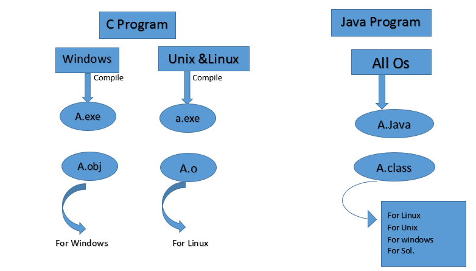
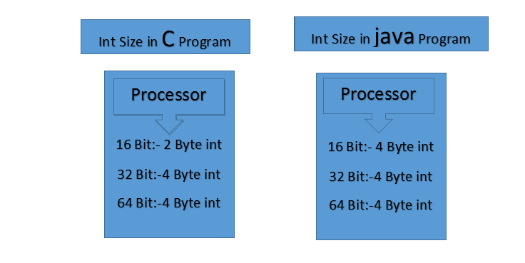
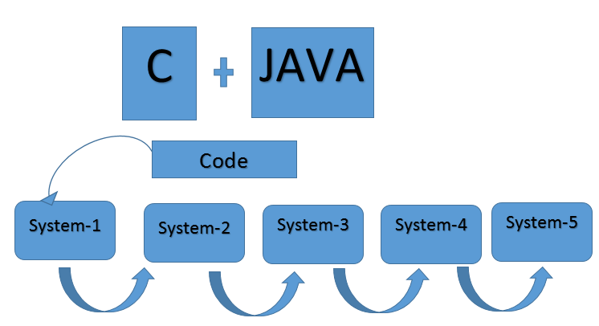
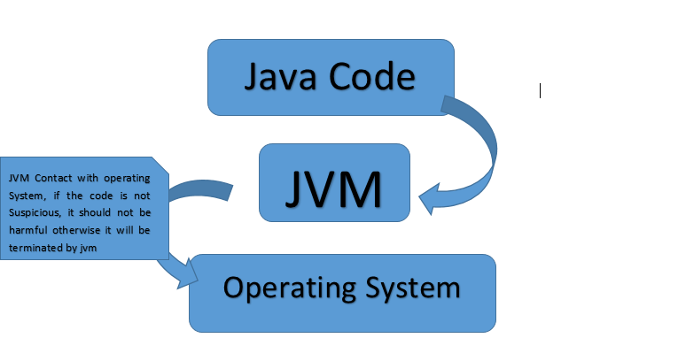

Introduction
java is object oriented programming language developed by Sun-MicroSystem. java is developed in 1991 as part of a research project to develop software for consumer
electronics devices -( TV, VCR, Toster, and other short of machine.)
Importent Points
-
java's role at that time work to be small, fast, efficent and eaisly portable to wide range of hardware devices.
java language was used in several projects with in SUN but did not get very much commertial attention until it was paired with HOT-JAVA.
HOT-JAVA was written in 1994 in a matter of months, both as a vehical for downloading and running applets and also as an Ex of set of complex application tha can be written in java
SUN has released thr beta version of the Java deveopers kit(JDK), which includes tools for developing java applets and application of sun syestem
Advantages of java programming language:
- Plateform independent
- Object Oriented
- Simple
- secure
- Architectural-neutral
- Portable
- Multi-Threaded
- Interpreted
- High-Performance
- Distributed
- Dynamic
- Robust
Plateform independent:-
- When Java is Compiled it is not Complied For Plateform Specific Machine (Specific OS) , Means the generated Byte Code can be Run On All Operating Sytems such as Windows, Linux, Android, Unix
- JVM is Plateform dependent so that java became java plateform independent

Architectural-Neutral:-
- Java is architectural neutral but C is not.
- C Int Size is depend on Processor But java int Size is Same on Each and Every Enviorment.
- Architecture neutrality is just one part of a truly portable system. Java takes portability a stage further by being strict in its definition of the basic language. Java puts a stake in the ground and specifies the sizes of its basic data types and the behavior of its arithmetic operators. Your programs are the same on every platform - there are no data type incompatibilities across hardware and software architectures.
- Ex:- Device drivers

Portable:-
- C and Java Both are Portable Proggramming Languages

Secure:-
- JVM Provide Security, it refuse the suspicious code before contacting with operating System.
